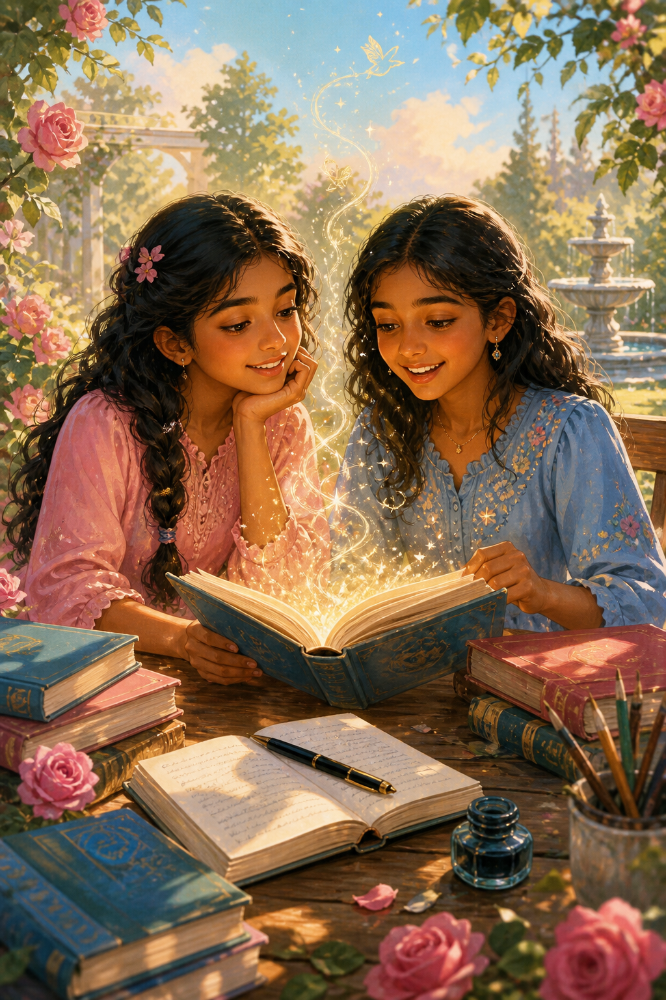
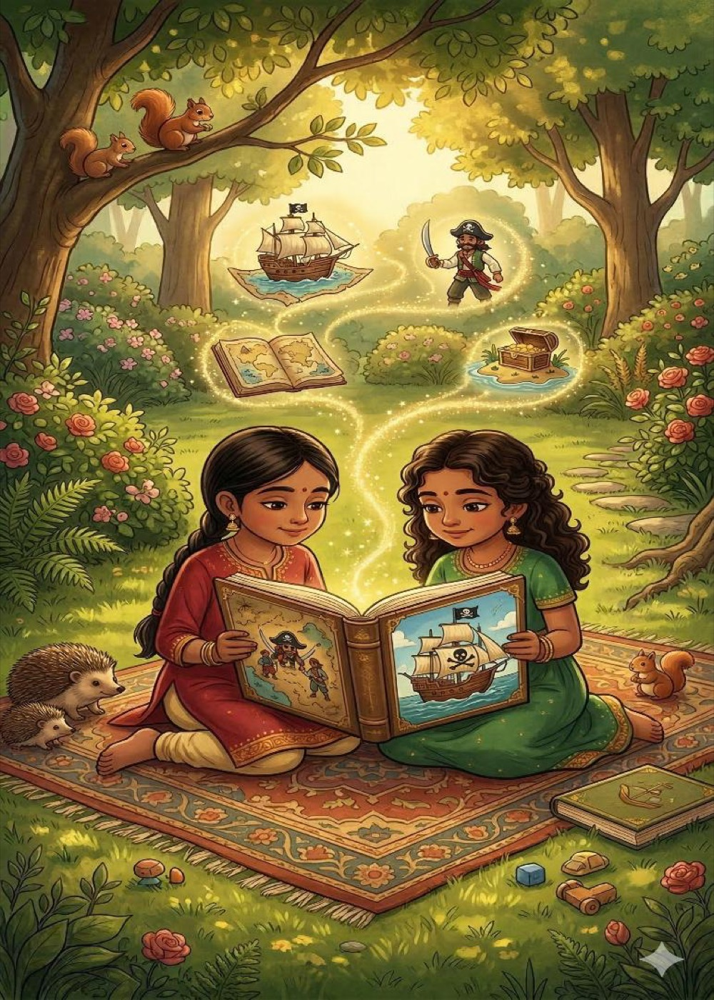
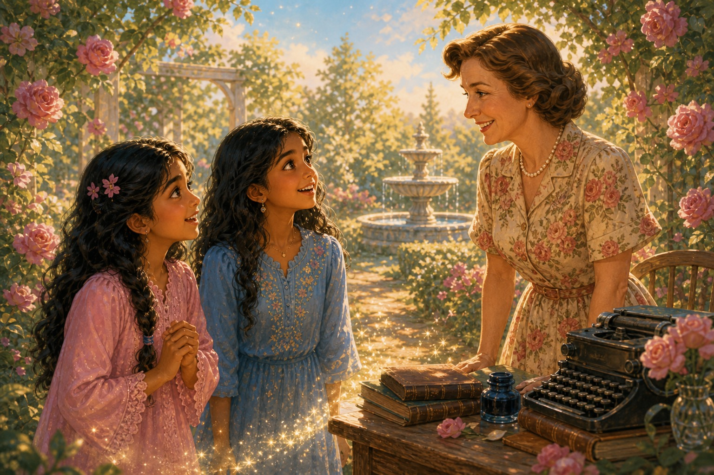
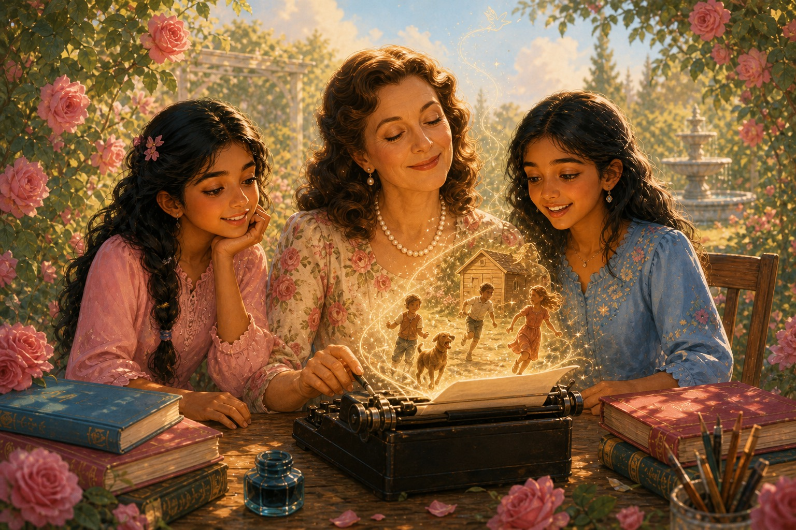
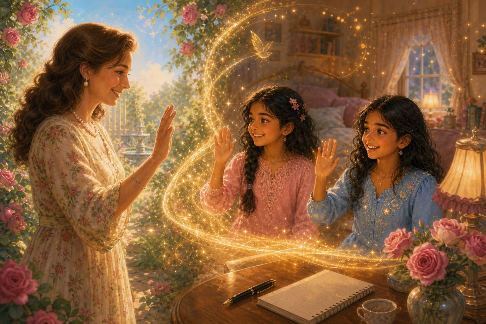
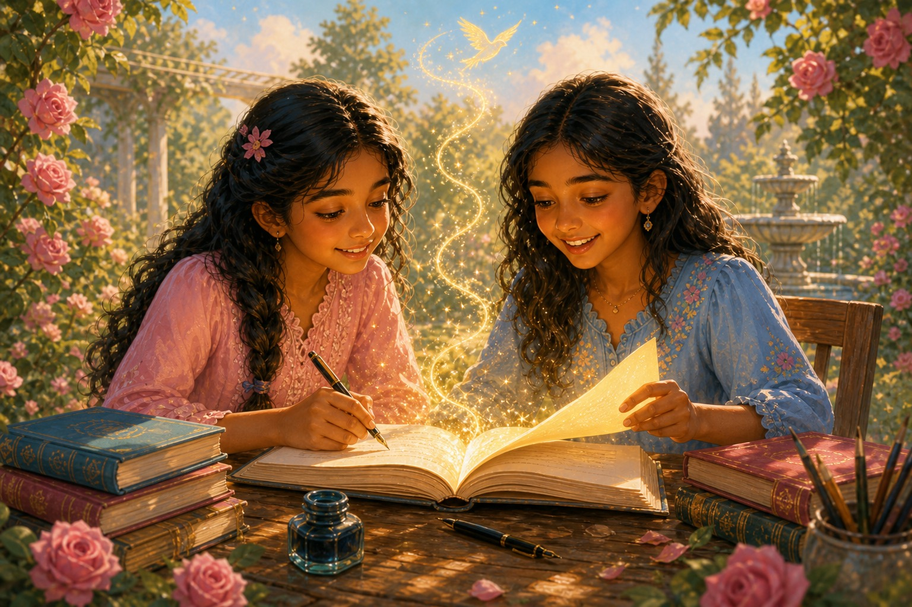

The Magic of StorytellingAnshu and Anya — Aanya and Anshika’s extraordinary journey
On a quiet Saturday, Aanya and Anshika wish they could write like Enid Blyton — and magic dust answers.
A Boring Saturday

It was a lovely Saturday afternoon. Aanya and Anshika were reading a book about pirates sailing around the world.
“How I wish we were characters in a book,” said Aanya.
“Me too — it would be so fun and exciting,” replied Anshika.
There was a long silence as they thought of the wonderful adventures they could have.
“But more than a pirate, I’d like to be a character in the Famous Five,” said Anshika.
“Me too,” agreed Aanya.
After a while, they finished reading the book. There was nothing very exciting or fun about it, so the two girls were upset.
“If only there were more exciting books like Famous Five and Secret Seven,” said Anshika. “Enid Blyton must have been a very clever writer to write stories like that. I wish we were like her, Anshu!!”
“That’s it — let’s write our own story, just like Enid Blyton!” exclaimed Aanya.
“Yes! Let’s do it,” said Anshika.
The Magic Dust
The two of them racked their brains to think up something, but ended up with nothing.
“How did Enid Blyton do it?” asked Aanya.
“If only we could meet her, she’d probably give us some tips,” said Anshika.
Suddenly, magic dust surrounded them.
“What’s going on?” asked Anshika.
“Same question here,” replied Aanya, frightened.
The dust swirled round and round and grew as tall as the wall. The two girls were trapped!
“Help!” they shouted, but nobody came to their rescue.
The Garden Study

When the magic dust finally died down, they were in a garden study. There was a woman who looked exactly like Enid Blyton!
“Enid Blyton? Is it really you?” asked the girls.
“Yes, it’s me. Why have you come here?” she asked.
“We are trying to write a book but don’t know how to start,” said Aanya.
“We were hoping you could help us out,” added Anshika.
The Secrets of Writing

“Well, somebody’s interested in my work and wants to write a book too,” said Enid Blyton.
“This is what I used to do. I never planned a single page. I would close my eyes until my characters stood before me. I simply typed what I saw the characters doing, like watching a movie. Instead of starting with an outline, start with a vivid scene and let your characters’ personalities dictate what they do next. I used simple, direct vocabulary and kept the action moving fast.”
“I categorised my writing into four stages — tinies, middle age, older kids and young adults. Pick one specific age group and stick to a vocabulary that feels natural. I used consistent traits like a bossy leader, a tomboy, or a clumsy girl — and familiar rewards like delicious meals, cosy hideouts, and winning against a bumbling adult.”
“Create a home base for your characters, like a shed, a cave, or a room where they feel safe. I wrote 6,000 to 10,000 words a day. Don’t wait for ‘inspiration’; set a daily word count goal. Even 500 words a day will finish a book much faster than waiting for the perfect idea.”
Enid’s tips (from the story)
- Start with a vivid scene, not a perfect outline
- Let characters lead the next action
- Keep language simple and the pace moving
- Choose one age group and stick to it
- Give your heroes a safe “home base”
- Write a little every day — even 500 words
Return Home

“Wow! What a strategy!” exclaimed Aanya.
“I can’t wait to try it out!” said Anshika.
“Go on then — write new stories, never stop believing, and don’t give up!!” said Enid Blyton.
“Thank you so much!” they said as the magic dust surrounded them again.
Soon, they were back in their room. Nothing had changed at all!
“How strange,” said Anshika.
“I know! We should write a book about our visit to Enid Blyton’s,” said Aanya.
“Yes, let’s do it.”
And so they did. This is the book they wrote. I hope it gets published one day, don’t you?
The End
Never stop believing — and don’t give up.

Companion to The Famous Five adventure written with Aanya.